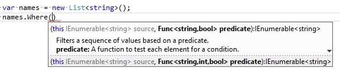

Matt's Software Blog
...imaginatively titled posts with a .NET twist
This is my personal blog.
The views expressed on these pages are mine alone and not those of my employer.
The views expressed on these pages are mine alone and not those of my employer.
Sept 15, 2014
PRETENTIOUS PARAMETERS AND THE C# COMPILER
I was reading through Jon Skeet's brilliant C# In Depth when I came across a thought provoking shred of info tucked away in Part 4. Jon was describing optional parameters, how they've been supported in the CLR from .NET 1.0 and the motivation behind their inclusion in C# 4. Along with this he provided an example which exhibits behaviour you probably won't expect.
READ ARTICLE
I was reading through Jon Skeet's brilliant C# In Depth when I came across a thought provoking shred of info tucked away in Part 4. Jon was describing optional parameters, how they've been supported in the CLR from .NET 1.0 and the motivation behind their inclusion in C# 4. Along with this he provided an example which exhibits behaviour you probably won't expect.

Sept 15, 2014
WHY LINQ REQUIRES YOU TO FUNC?
When LINQ appeared on our screens it brought along a requirement under the gueise of 'Func' whenever you wanted to do anything substantial, such as supply the contents of a where clause.
READ ARTICLE
Sept 15, 2014
UNASSUMING UNICODE, THE SECRET TO CHARACTERS ON THE WEB
Recently I got an e-mail with an interesting title. Just how did KLM insert an airplane into the subject of an e-mail? Unicode!
READ ARTICLE
Sept 15, 2014
KEEPING YOUR SOURCE, SAFE
Too many times now I have seen a fear of committing code, with many developers waiting until they are absolutely certain their code is damn near perfect before hitting commit.
READ ARTICLE